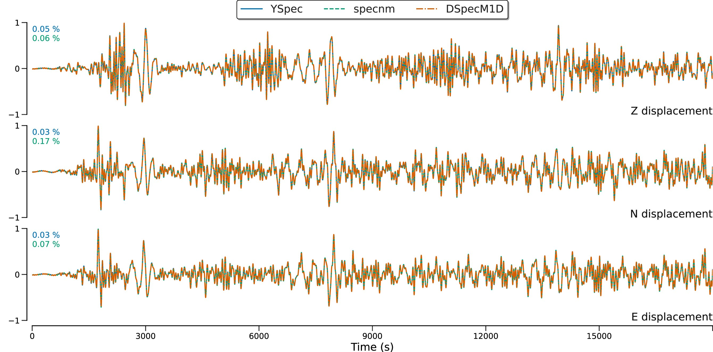

Paper workflows / ex2
EX2 · Bolivia medium-frequency comparison
A medium-frequency event workflow with a Gaussian source-time-function stage. The plotted comparison includes DSpecM1D, YSpec, MINEOS and SpecNM.


Configuration
The current data/params/ex2.txt uses a no-attenuation PREM model, a 1.5–25 mHz band and maximum degree 350; the executable calculates a 500-minute output. Published Figure 2 uses 1.5–21 mHz and maximum degree 300. The code applies the same STF/filter treatment to the relevant comparison traces.
Comparison inputs
YSpec, MINEOS and SpecNM files are read from data/reference/.
Executable and outputs
cmake -S . -B build/release -DDSPECM1D_BUILD_BENCHMARKS=ON
cmake --build build/release --target ex2 --parallel 2
OMP_NUM_THREADS=2 ./build/release/bin/ex2The executable writes ex2_t.out and ex2_w.out to build/release/output/. A fresh build generates these files when the executable runs.
Plot command
Run from the repository root after producing the required output files:
DSPECM1D_BUILD_DIR=build/release python3 plotting/functions/ex2.pyScope and limits
This is the published Figure 2 case. The article compares DSpecM1D with YSpec and specnm. The current repository ex2 workflow also loads MINEOS data. Although the executable calculates 500 minutes, the current plot script displays only samples from 0 through 18,000 seconds (five hours), matching the published plot interval. The current frequency band and maximum degree are wider/higher than the published 1.5–21 mHz and degree 300 settings. The published paper describes a Heaviside step-function source; this checkout’s ex2 applies a Gaussian STF to DSpecM1D, YSpec and MINEOS traces, while SpecNM receives the shared filter only.